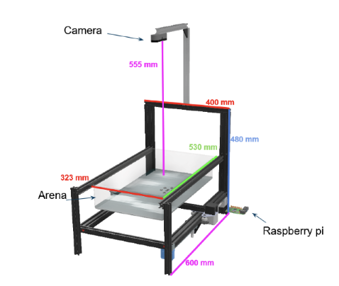
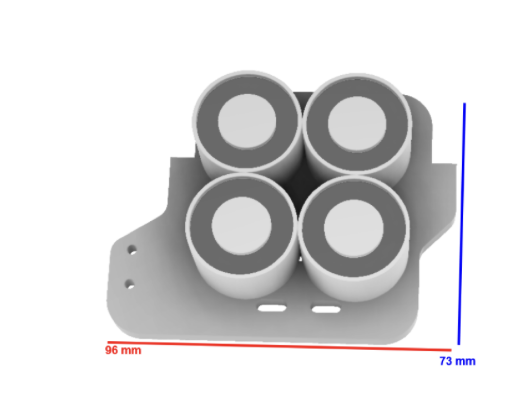
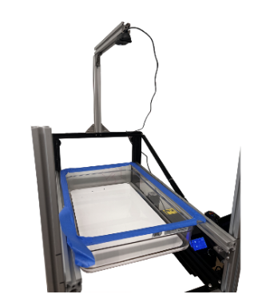

During my capstone project course, I was a member of a five-person robotics team working with the Synergetic Adaptive Machinas (SAM) Laboratory at the University of Michigan. The SAM Lab develops robot swarms that can reconfigure, move together, and manipulate their surroundings. My team and I developed a scalable magnetic actuation and computer vision control system for microrobot swarm manipulation across a large operational workspace. The project addressed a major limitation in existing microrobot control systems: poor scalability of large electromagnet arrays. Given the fixed and stationary nature of the electromagnetic array system previously used, nominally increasing the area of operational control (an increase of 1 inch in the x and y planes) requires additional electromagnets to be added, which quickly becomes both cost and space prohibitive. Instead, our system utilized a modified Creality CR-10 gantry platform combined with a custom-designed electromagnetic end-effector for microrobot manipulation. This allows for a new method of control where four mobile electromagnets can establish precise control over whatever area the chosen gantry system can accommodate. My contributions included mechanical design, system integration, and implementation of control strategies for end-effector positioning. I also implemented computer vision algorithms for microrobot detection and positional tracking using OpenCV and integrated autonomous path-planning functionality for navigating microrobot swarms through obstacle-based environments. The final system successfully demonstrated scalable, cost-effective microrobot swarm control with both manual and autonomous navigation capabilities.


